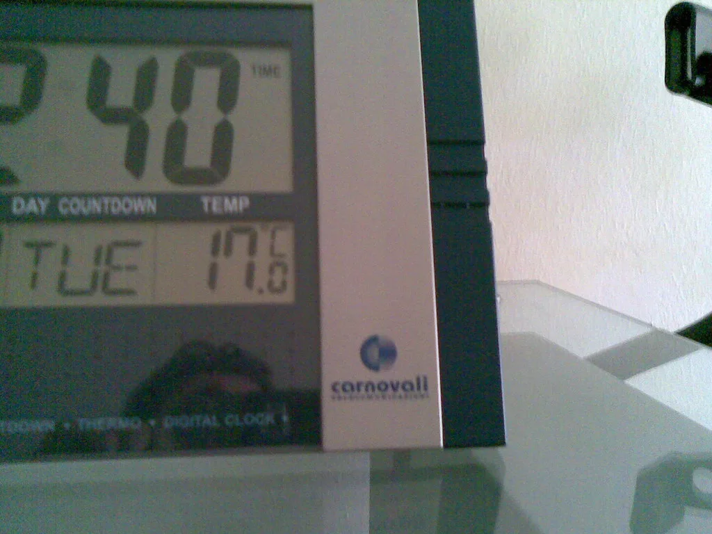
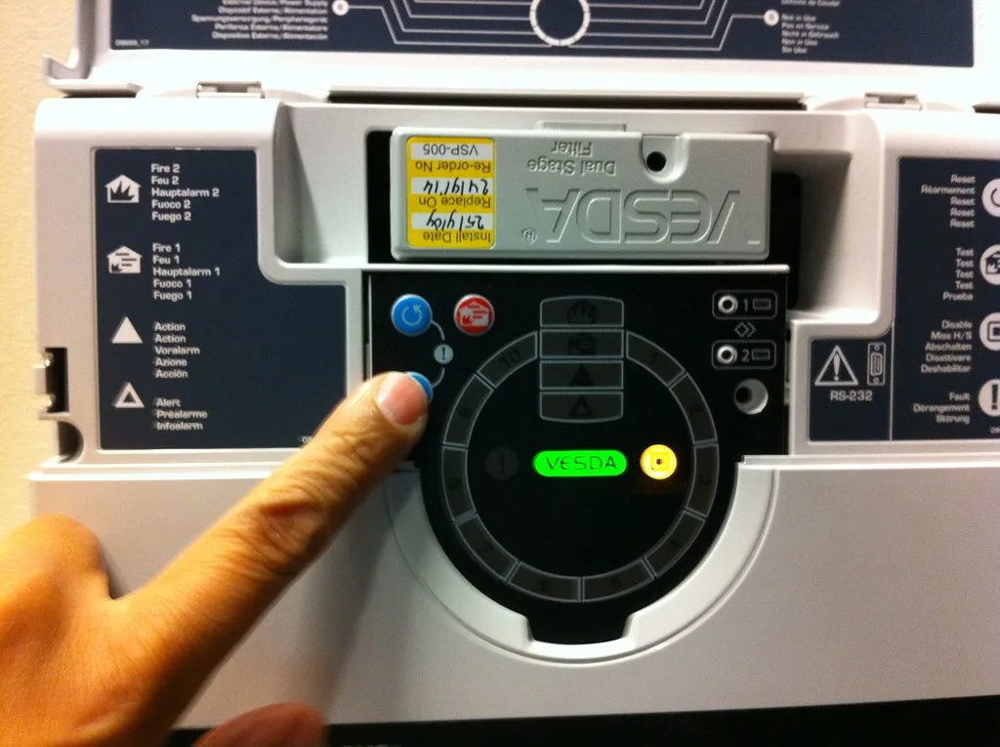

마이크로소프트(MS)의 업무용 클라우드 서비스 '마이크로소프트 365'에서 대규모 접속 장애가 발생해 전 세계 이용자들이 이틀 가까이 불편을 겪었다. 장애는 현지시간 12일 시작돼 13일까지 이어졌고, 이메일 서비스 아웃룩을 중심으로 협업 도구 팀즈와 AI 비서 코파일럿 등에도 영향이 번졌다. MS는 고객에게 공식 사과하면서 이번 사태가 외부 공격 때문이 아니라 내부 기술적 결함에서 비롯됐다고 밝혔다.
MS가 내놓은 설명에 따르면 문제의 뿌리는 앞서 진행한 네트워크 용량 증설 작업이었다. 증설 과정에서 생긴 결함이 곧바로 드러나지 않고 숨어 있다가, 최근 네트워크 구성을 변경하는 과정에서 표면화되면서 장애로 이어졌다는 것이다. 회사는 이번 일이 사이버 공격이나 AI 에이전트와는 관련이 없다고 선을 그었고, 근본 원인은 이미 해결했으며 남은 고객과 지역의 서비스를 차례로 복구하고 있다고 전했다.

장애 초기에는 원인을 두고 여러 추정이 나왔다. MS는 처음에 여러 지역 인프라에서 부하가 급격히 늘어난 것이 연결 오류의 원인으로 보인다고 설명했다. 이후 핵심 서버의 처리 과정에 과부하가 걸리며 일부 서버가 멈췄고, 그 여파로 처리 용량 부족이 연쇄적으로 번졌다는 분석이 뒤따랐다. 한 지점의 문제가 다른 서버로 부담을 넘기면서 피해가 눈덩이처럼 커지는 클라우드 장애의 전형적인 양상이었다는 평가다.
피해 범위도 넓었다. 외신 보도에 따르면 장애는 미주 전역과 유럽, 아시아, 아프리카 일부 지역 등 70여 개국으로 확산했다. 이메일 계정에 접속하지 못하거나 메일 송수신이 지연되는 사례가 잇따랐고, 화상회의와 메신저를 팀즈에 의존하는 기업들은 사실상 업무를 멈춰야 했다는 호소가 나왔다. 아웃룩과 연동해 쓰던 외부 AI 서비스 기능까지 함께 멈췄다는 이용자 불만도 이어졌다.
복구는 단계적으로 진행됐다. MS는 13일 오전 일부 서버의 복구를 마쳤고, 이메일 접속과 지연된 메시지 처리 상황이 점차 나아지고 있다고 밝혔다. 다만 전체 서버의 처리 용량이 아직 정상 수준을 되찾지 못해 간헐적인 접속 장애가 한동안 이어질 수 있다고 경고했다. 장애 시작 시각에 대해서는 보도마다 차이가 있어, 정확한 경위는 MS가 공개하겠다고 밝힌 사고 보고서를 통해 확인될 전망이다.

MS는 피해 고객에 대한 보상 방침도 내놨다. 아웃룩 장애로 손해를 본 기업 고객에게는 서비스수준협약(SLA)에 따라 보상 크레딧을 지급하기로 했다. 다만 보상을 받으려면 고객이 직접 신청하고 피해를 입증할 자료를 제출해야 한다. 업무 중단으로 생긴 실제 손실에 비해 크레딧 규모가 충분할지를 두고는 기업 고객들 사이에서 회의적인 시각도 나온다.
이번 사태는 소수의 대형 클라우드 사업자에게 업무 기반을 맡긴 현실의 취약성을 다시 드러냈다는 지적이다. 이메일과 회의, 문서 작업이 한 플랫폼에 묶여 있으면 장애 하나가 조직 전체의 업무를 멈추게 할 수 있기 때문이다. 전문가들은 기업들이 핵심 업무에 대한 대체 연락 수단과 비상 운영 절차를 미리 마련해 둘 필요가 있다고 조언한다. MS가 사고 보고서에서 재발 방지책을 얼마나 구체적으로 내놓을지에 관심이 쏠린다.